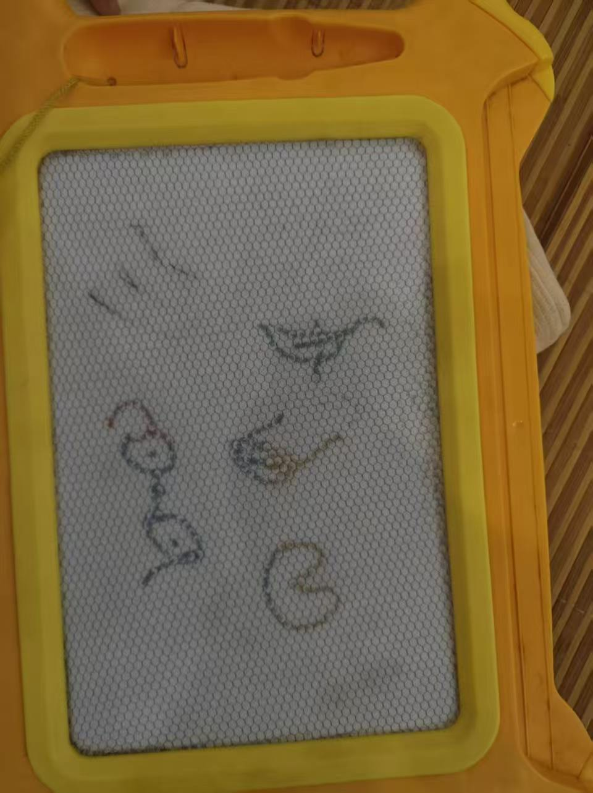
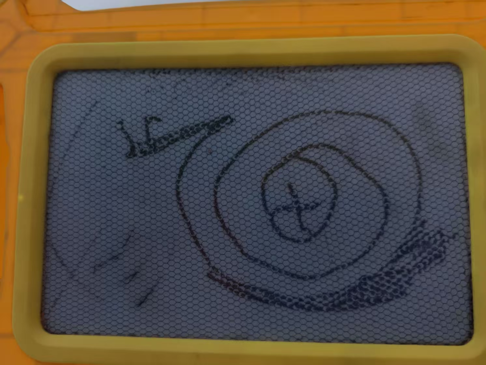
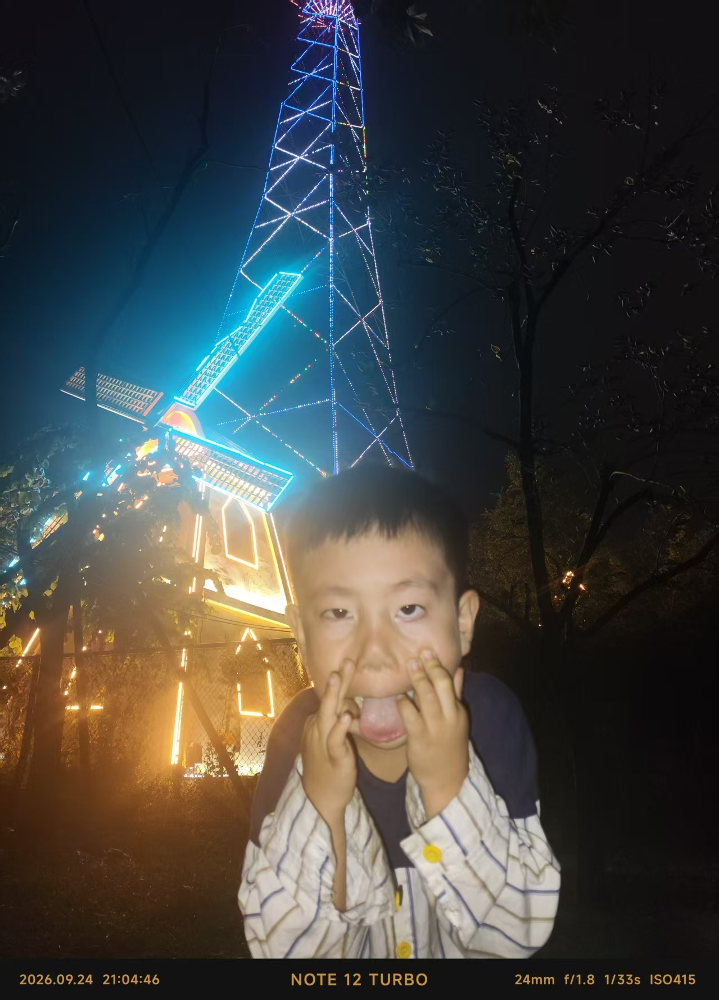

260928 笔记：开始 build in public
今天一整天时间都在围绕build in public 的框架,首先我让AI生成一份boiler plate, 然后中间删改无数次，最终网页框架成型了。 晚上我在A4纸上手写了HTML， CSS的全部代码，加深了对HTML, CSS的理解和肌肉记忆。
今天晚上，我开始在A4纸上手写了HTML, CSS的全部代码，加深了对HTML, CSS的理解和肌肉记忆。
开始前简单说明个人情况：
- 我今年42岁，3个月前主动从印度的一家中资公司离职，是一个4岁男孩的爸爸和一直默默支持我的老婆；
- 离职后，确定要做转行从事web开发。主要考虑是自己年龄过40，国内的职场大门基本已经关闭，海外派驻工作我已经厌倦，我想换一个方向。另外一个客观现实是孩子已经4岁，我不能接受再错过他的童年。远程web开发是一个不错的选择；加上现在AI的普及，进入到IT行业的门槛在降低，这个行业未来前景依然不错。
- 个人优势：
- 对电脑操作还算熟悉，尤其对捣鼓代码，敲键盘有兴趣，喜欢折腾；
- 英文语言优势较大，直接接触英文的技术文档和学习材料可以提升很多效率，同时在后期需要直面海外的同事，客户时也更能应对自如；
- 时间方面，至少26年下半年到27年上半年，将近一年的时间可以投入到转行中。
- 面临挑战
- 平衡好个人时间支出，是不小的挑战！一个是在家状态，没有固定的工作时间，需要很好合理安排个人的精力和时间；另外今年儿子4岁，特别粘人，这个需要合理安排时间。
- 编程基础薄弱，略懂一点HTML, CSS, 然后代码方面基础了解数据类型和函数这个层次。这个没办法，只能堆时间和练习学习和实践；这个没办法，只有堆时间和练习。
小孩子在身边，这两天手脚出阵疹子，只好跟幼儿园请假。一整天小家伙不时跑过来玩.学习的进度确实也受了不少影响，只好晚上多花些时间来弄。小家伙是 我生命中的小天使，也是我继续努力的重要动力。下面附几张小家伙的图上：



你好，我是司二胜
Web全栈开发新人，有一个可爱的4岁的儿子，42岁转行。这里记录学习笔记、踩坑经历和项目日志。以Build in Public为理念，力争从零开始，打造属于自己的Web开发之路。